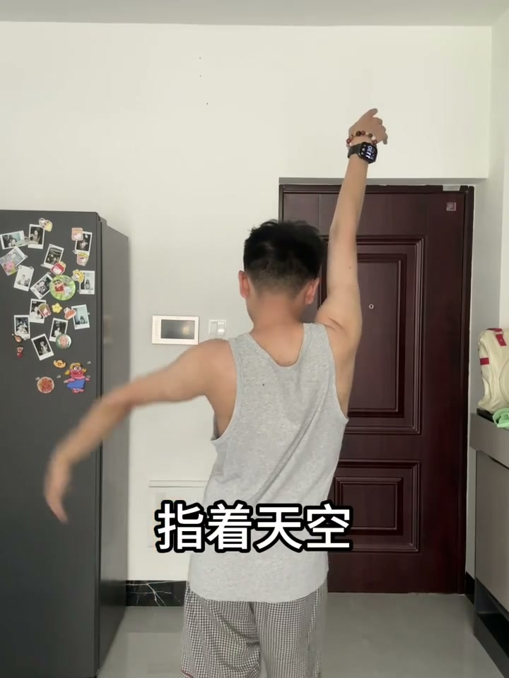
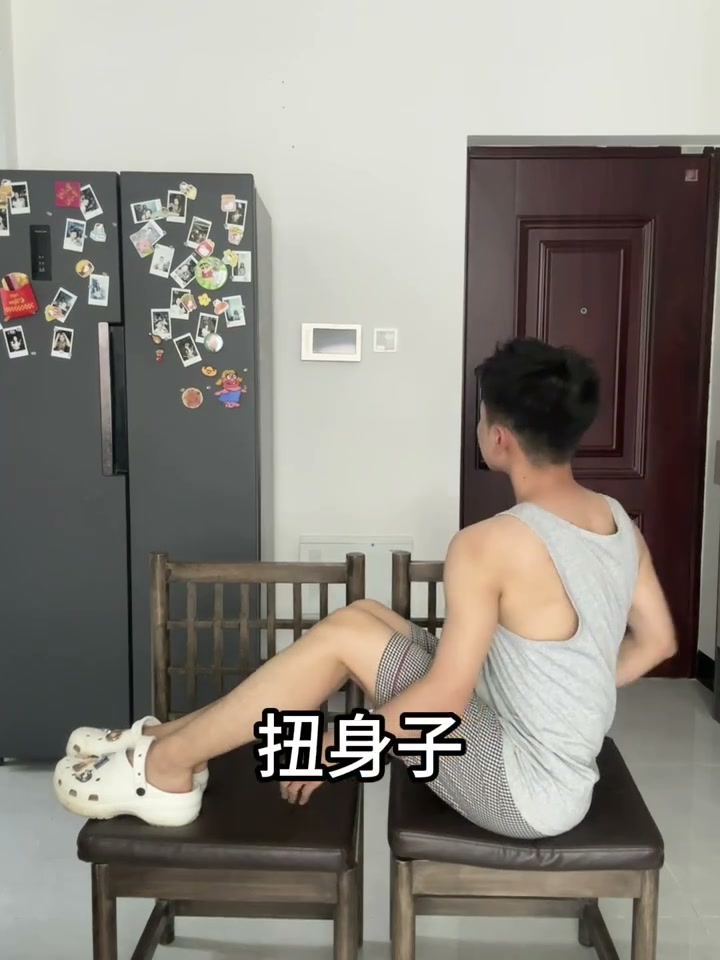
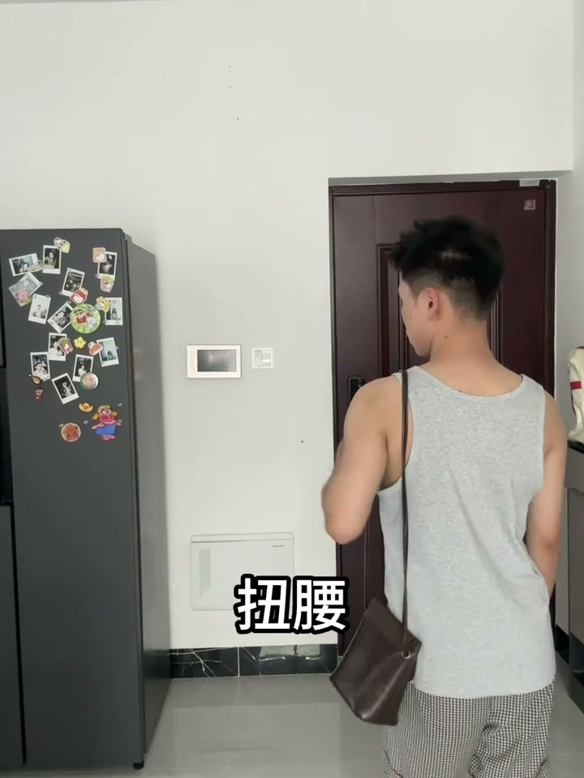
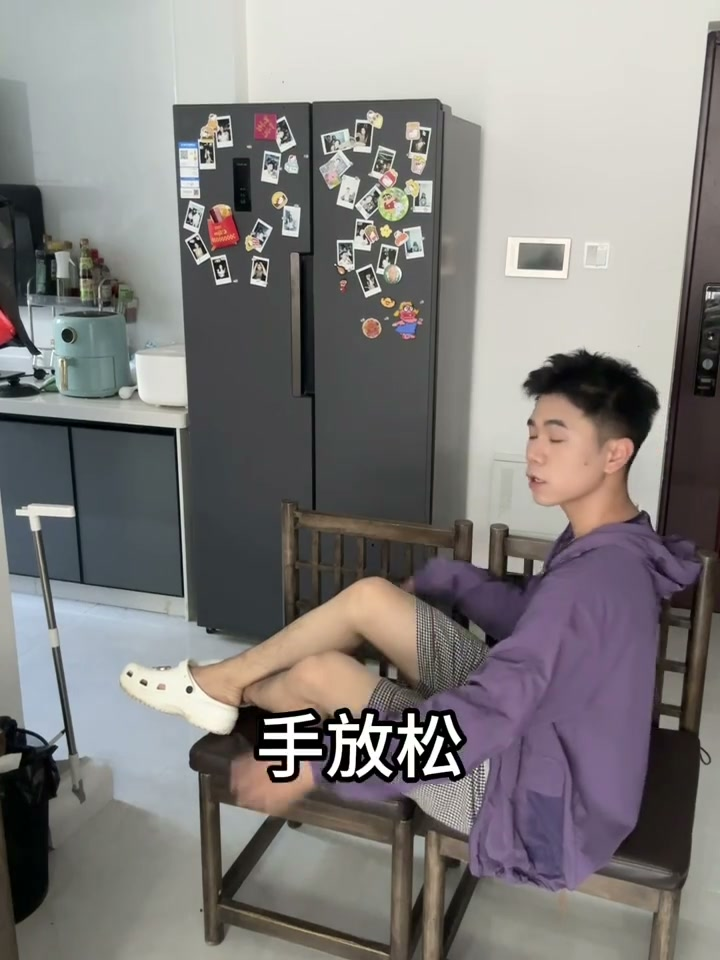

内容要点
四组海边拍照姿势，每组由两个关键动作构成，覆盖站姿和坐姿。
知识结构
[00:00→00:02]
站姿：指天+扭腰
手指向天空，腰部向一侧扭转，利用腰部的扭转营造 S 型曲线，同时手臂上举拉长视觉比例。
[00:04→00:06]
坐姿：扭身+比心
身体坐直，上半身向一侧扭转，双手在胸前比心。坐直保证体态不塌，扭身增加动感。
[00:08→00:10]
构图：人物右下角+扭腰看海
人物置于画面右下角，扭腰的同时看向远处的海面，利用留白构图营造氛围感和故事性。
[00:12→00:14]
坐姿：双腿交叉+放松看右
双腿交叉放置，手臂自然放松，头部看向右侧。整体姿态松弛自然，不刻意摆拍。
核心结论
海边拍照的核心是「扭腰」制造身体曲线和「视线引导」制造故事感，而不是僵硬地面对镜头。
图文实录
姿势一：站姿指天扭腰
00:00 – 00:02
UP 主给出两个指令："指着天空，扭腰"。这个姿势的关键在于：手臂上指拉长了上半身的视觉线条，腰部的扭转则打破了正对镜头的呆板。两个动作组合在一起，既有向上的延伸感，又有身体侧面的曲线。

[00:01] 站姿拍照：手指天空配合扭腰，营造 S 型身体曲线
Standing shot: pointing at the sky with a waist twist, creating an S-curve
姿势二：坐姿扭身比心
00:04 – 00:06
换成坐姿后，UP 主说"水平坐直，扭身子，比心"。坐姿最大的陷阱是容易塌腰驼背，所以第一步强调坐直。然后上半身扭转制造角度变化，最后比心增加互动感和亲和力。

[00:05] 坐姿拍照：坐直+扭身+比心，三要素营造自然互动感
Seated photo: sit straight + twist + heart hand — three elements for a natural interactive feel
姿势三：人物右下角构图
00:08 – 00:10
这个姿势特别强调了构图："人物右下角，扭腰，看海"。人不居中，而是放在画面的右下方，目光引向左侧的海面。这是经典的「留白构图」手法——人物朝向开阔的一侧，画面不拥挤，观众视线自然跟随人物看向远方。

[00:09] 人物右下角构图：扭腰同时看向海面，利用留白制造氛围感
Subject in the lower-right frame: twisting the waist while looking at the sea, using negative space for mood
姿势四：坐姿交叉腿放松
00:12 – 00:14
最后一个姿势"双腿交叉，手放松，看右侧"。与第二个坐姿不同，这里不强调身体扭转和手部动作，而是追求松弛感——双腿交叉制造腿部线条变化，双手自然放松不刻意摆姿势，目光看向一侧增加不经意感。

[00:13] 交叉腿坐姿：手部完全放松，头部自然转向右侧
Crossed-leg sitting: hands fully relaxed, head turned naturally to the right